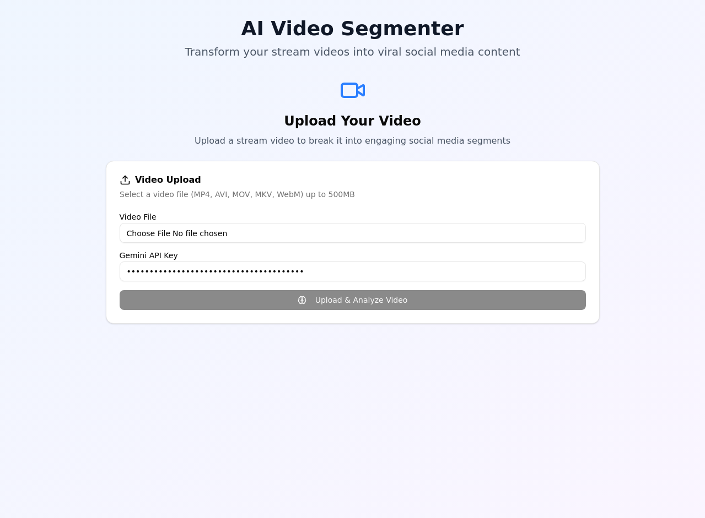

Transform your stream videos into viral social media content with advanced AI analysis
🚀 Try Live DemoA sophisticated AI-powered application that analyzes stream videos and automatically identifies the most engaging segments for social media content creation.

Content creators spend hours manually reviewing stream footage to find engaging moments. Our AI automates this process, identifying viral-worthy segments in minutes.
Uses Google Gemini with advanced chain-of-thought reasoning to evaluate visual appeal, emotional content, and viral potential of video segments.
Provides specific recommendations for TikTok, Instagram Reels, YouTube Shorts, and Twitter, including optimal timing and hashtag suggestions.
Advanced frame-by-frame analysis using computer vision and AI to identify key moments, emotional peaks, and visual interest points.
Identifies emotional triggers, facial expressions, and audience engagement factors that drive viral content performance.
Proprietary scoring system that evaluates content based on social media algorithm preferences and engagement patterns.
Tailored recommendations for each social media platform's unique algorithm requirements and audience preferences.
Fast processing pipeline that can analyze hours of content in minutes, with progress tracking and status updates.
Comprehensive content strategy generation including posting schedules, audience targeting, and performance predictions.
A detailed breakdown of how we built this sophisticated AI-powered video analysis system.
Chain-of-Thought Reasoning: Implemented sophisticated prompting techniques that guide the AI through step-by-step analysis:
Multi-Stage Processing: Efficient video analysis workflow:
Self-Improving System: Built with autonomous capabilities:
React-Based Interface: Professional user experience:
Flask API Architecture: Robust and extensible:
Efficient Processing: Optimized data handling:
Traditional single-shot prompts often miss nuanced aspects of video content. Our chain-of-thought approach breaks down analysis into logical steps, improving accuracy and providing transparent reasoning for each decision.
Video content analysis requires complex reasoning that benefits from self-reflection and iterative improvement. The agentic approach allows the system to evaluate its own analysis quality and adjust accordingly.
Users need quick feedback for initial decisions but may want deeper analysis for important content. Our two-tier system (quick/full) balances speed with thoroughness.
Separation of concerns allows independent scaling and development. React provides excellent UX for complex interfaces, while Flask offers flexibility for AI integration and processing workflows.
Handles all video-related operations including frame extraction, scene analysis, and segment creation using OpenCV and FFmpeg.
Advanced AI system using Google Gemini with sophisticated prompting techniques for comprehensive video content analysis.
RESTful API providing clean interfaces for video upload, analysis, and result retrieval with proper error handling.
Modern React interface with real-time updates, responsive design, and intuitive user experience for complex analysis results.
Long-running AI analysis tasks are handled asynchronously to prevent blocking the user interface, with real-time progress updates.
Each component is independently testable and replaceable, allowing for easy updates to AI models or processing algorithms.
Comprehensive error handling at each layer ensures graceful degradation when components fail or API limits are reached.
Architecture supports horizontal scaling with load balancers, database integration, and distributed processing capabilities.
Roadmap for expanding the AI Video Segmenter into a comprehensive content creation platform.
Priority: High
Generate complete social media clips automatically based on analysis results, including transitions, captions, and music synchronization.
Priority: High
Expand analysis capabilities to support content in multiple languages with cultural context awareness.
Priority: Medium
Comprehensive analytics platform tracking performance of generated content across social media platforms.
Priority: Medium
Allow users to train specialized models for their specific content types and audience preferences.
Priority: Low
Direct integration with social media platforms for seamless content publishing and performance tracking.
Priority: Low
Live analysis of streaming content with real-time highlight detection and automatic clip creation.
Download the complete source code and start building your own AI-powered video analysis system.
Full implementation including backend API, frontend interface, AI analysis engine, and comprehensive documentation.
Get up and running in minutes with our comprehensive setup guide and example configurations.
Simple configuration with your Gemini API key to start analyzing videos immediately.